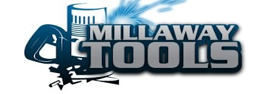
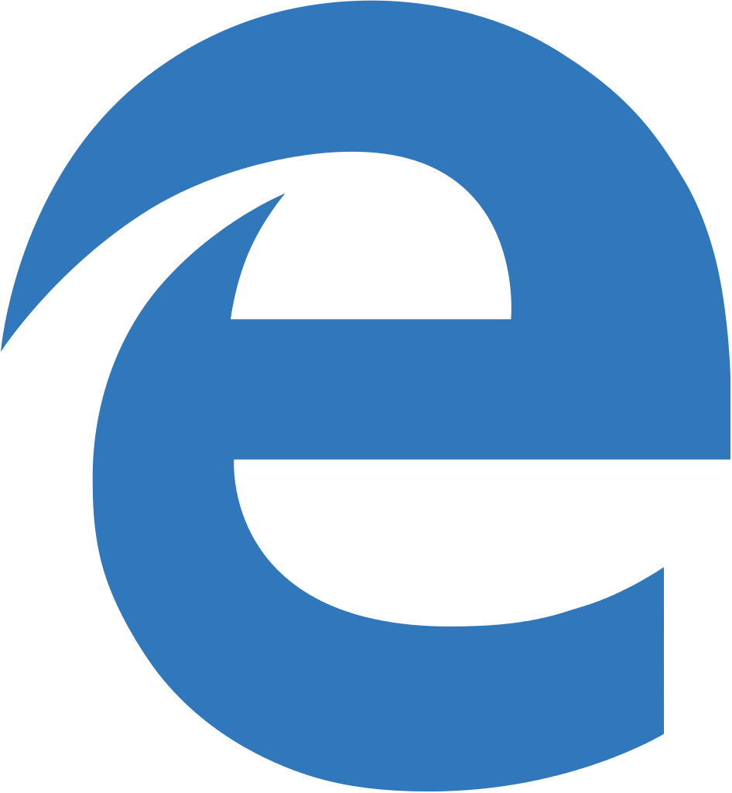

This is Saul Hernandez's second year contributing to the team. Saul also teaches multiple IED and computer science classes during the school day. In addition, Saul received a 2015 STEM Teacher Of The Year award for his outstanding job running the team and teaching the skills of computer science and was featured in Pioneer's newspaper as running an exemplary STEM program at Pioneer.
Lonny Weissman
Lonny Weissman has been a long-time mentor for the team. Lonny is a retired algebra teacher from Pioneer High School. He has been involved with the team since 2003, and In 2008, Lonny won the Silicon Valley Regional Woodie Flowers Award from FIRST . Lonny was instrumental to bringing robotics classes to Pioneer High School as well as helping the team get off the ground.
Gary Koerzendorfer
Gary Koerzendorfer is the team's Programming/Software Mentor. Gary worked at Hewlett-Packard in product development for many years. He has mentored many FIRST Robotics teams starting with Team 972. In 2014, Gary won the Utah Regional Woodie Flowers Award. He has dedicated many hours of his time to helping not only The Apes of Wrath, but other teams as well.
Rahil Mehta
Rahil Mehta is a graduate of Pioneer High School Class of 2011, and participated in the robotics team all four years at Pioneer. He graduated from UC Berkeley last year, in 2015, and currently works at Tesla. He is co-owner of MillAway Tools along with Eric Wach who is a Pioneer and Apes of Wrath Alumnus as well.
Mark Nazaradeh
Mark is a Pioneer High School class of 2015 graduate. He participated in robotics for 2 years at Pioneer. He dedicated many hours of his time to the team and to helping the team succeed in competition. He is back now in 2016 to help out the Apes of Wrath some more.
Sponsors
Cindy Gilbert, a graduate of MIT, has been a long-time friend and personal financial supporter of the Pioneer Robotics team.
GigOptix, Inc. is a leading supplier of semiconductor and optical components that enable end-to-end high speed information streaming over the network.
Google is the world's leading search engine and internet platform. Since 1998, billions of people have used google to search up daily necessities and information. Google is also a very big advocate for a better world. Each year, they donate $100,000,000 in grants, 80,000 hours, and $1 Billion in products to people and organizations in need.
Qualcomm is a world-leading provider of wireless technology and services. Their many divisions are focused on wireless and wired technologies for the mobile, networking, computing, consumer and medical electronics markets. They are the world's largest fabless semiconductor producer and the largest provider of wireless chipset and software technology, which powers the majority of all 3G devices commercially available today. They develop technologies for optimized software and hardware that are designed to help drive the evolution of connected user experiences in the Internet of Everything.
Boston Scientific is a leading innovator of medical solutions that improve the health of patients around the world. Their products and technologies are used to diagnose or treat a wide range of medical conditions, including heart, digestive, pulmonary, vascular, urological, women's health, and chronic pain conditions.
Evans Analytical Group (EAG) is the premier provider of materials characterization and microscopy services to technology companies in Silicon Valley. EAG helps all types of companies, from start-ups to multinationals, to solve their materials problems and bring their products to market quickly.

MillAway Tools was founded in June of 2012 by team alumni Eric Wach and Rahil Mehta. Both Eric and Rahil were exposed to engineering and manufacturing technologies through the Apes of Wrath high school robotics program. The founders and company continue to provide expertise and support to their former team.
The Wilson family has supported the Apes of Wrath greatly over the past couple of years. They currently have a student on the robotics team at Pioneer.
The McFadden family is a dedicated supporter of the Apes of Wrath. They currently have a student on the robotics team at Pioneer.
Community
FIRST Outreach
Apes of Wrath members are very active members of the FIRST community. Each year, team members go to local schools and organizations to help with FIRST Lego League(FLL) and FIRST Tech Competition(FTC) teams. They contribute both time and funding to the teams to ensure that they receive a great experience from the FIRST robotics organization. This ensures the continuation of FIRST robotics by getting younger students involved in the fun and exciting nature of FIRST. This year, Apes of Wrath members are helping 3 seperate FLL and FTC teams.
STEM Outreach
The Apes of Wrtah also highly supports STEM education and thinking. Just one of the many ways that the Apes of Wrath help promote STEM in the community is at Scout-a-rama each year. Scout-a-rama is a large Cub Scouts of America event when local cub scouts can come to learn about many different things including crafts, actibities, and STEM education. The Apes of Wrath attend this event each year to teach the scouts about STEM and robotics.
Since 2001, Team 668: The Apes of Wrath has worked to inspire those in and around our community to identify the need for, and take part in, the education of science, technology, engineering and math. We strive to do this through our participation in FIRST Robotics, a multi-national organization that creates robotics programs for a variety of different student levels. Team 668 proudly participates in the FIRST Robotics Competition, or FRC. The team has participated in the FIRST Tech Challenge, or FTC program as well. 668 students also mentor FIRST Lego League, or FLL teams. The Apes of Wrath are open to any and all new members. If you, or someone you know in our area does not have access to a team, contact us.
Compatable Browsers
S Browser
Compatable with all Samsung devices running Android 4.4+
Internet Explorer
Although not reccomended, this browser will retain its functionality.

Edge
Although not reccomended, this browser will retain its functionality.
Chrome-Mobile
Compatable with all devices that run Chrome Mobile.
.jpg)
.jpg)
.jpg)